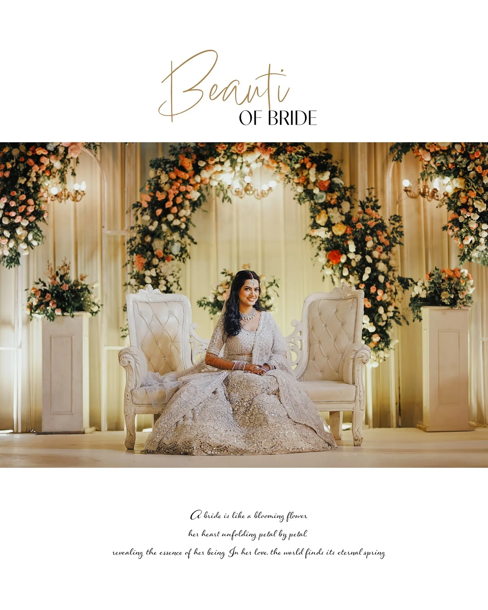
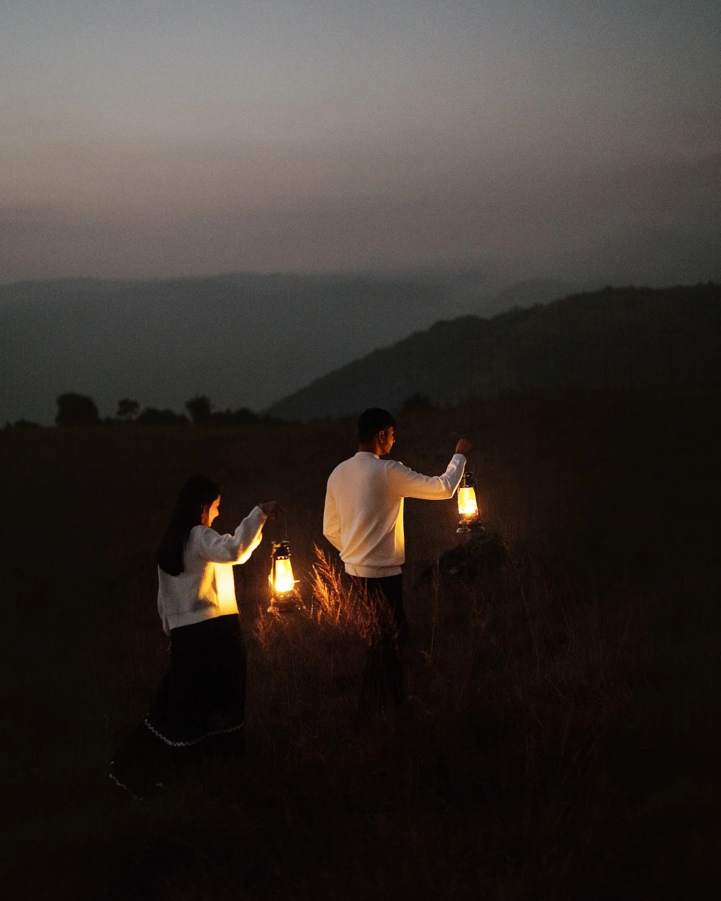
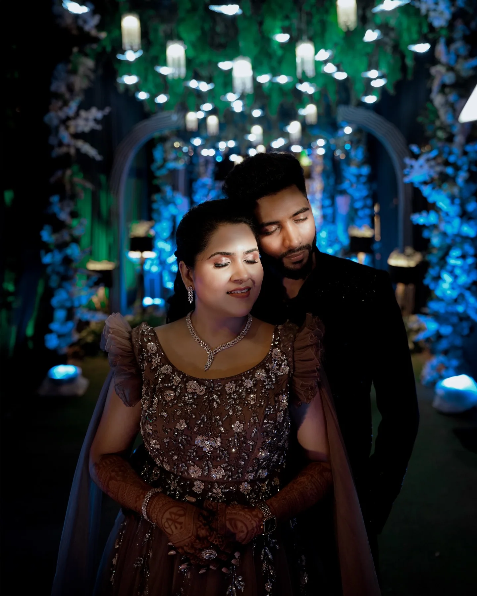
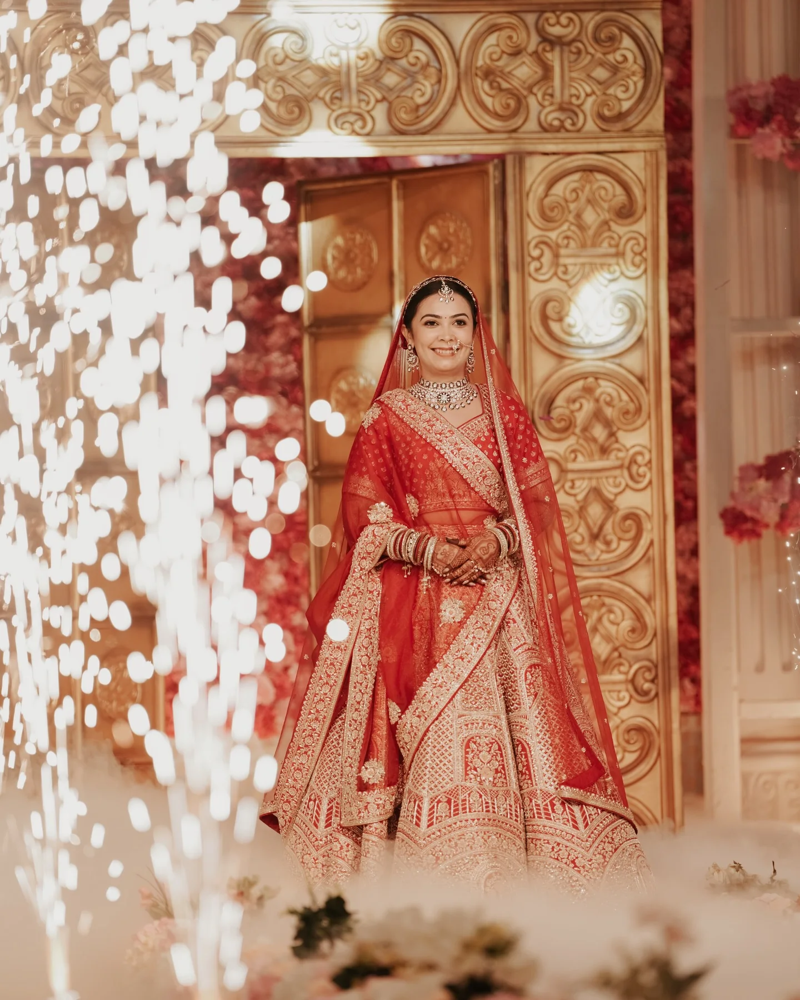
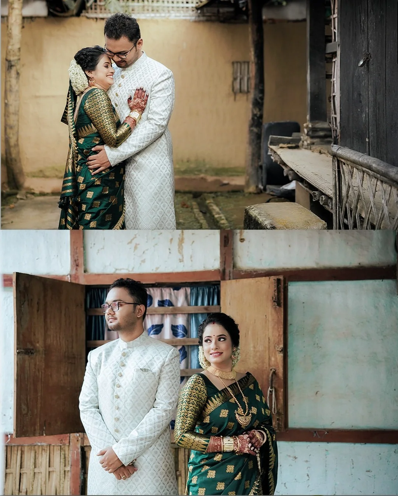
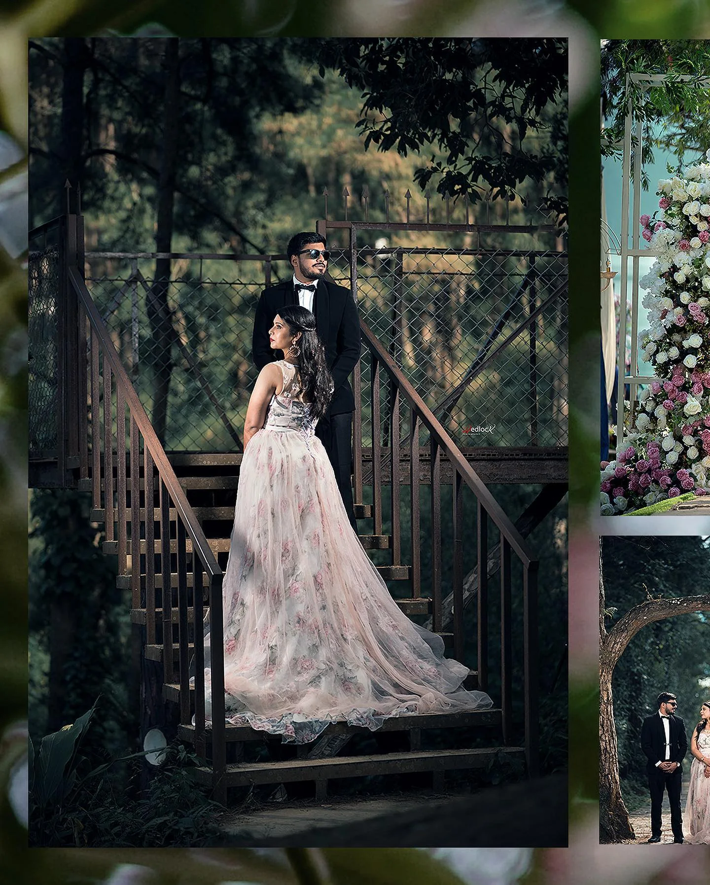

We preserve
the way it felt.
Not just how the day looked, but the atmosphere around it — the people, the light, the quiet pauses and everything that made it yours.
GUWAHATI · ASSAM · INDIA
Wedding photographs and films for the moments you never want to forget.
Not just how the day looked, but the atmosphere around it — the people, the light, the quiet pauses and everything that made it yours.
The nervous laugh before the ceremony. A hand finding yours across a crowded room. Your mother fixing one last detail. We let those moments happen naturally.
Our work blends a documentary instinct with an editorial eye — composed when it should be, unobtrusive when it matters, and always grounded in what actually happened.
We give you direction when it helps and space when it doesn't. The goal is simple: photographs that still feel like you years from now.
Discover the Wedlock way ↗02 / SELECTED STORIES
Scroll slowly. One photograph takes over at a time, letting the story change without turning the page into a gallery.
Before the room fills and the music begins, there is this small, beautiful pause. We look for it.
The photographs should feel like you — relaxed, close, completely yourselves.
Old walls, open skies, familiar roads and the places that become part of your story.
Not every photograph needs an audience. Some moments are better when they belong only to the two of you.
That is what we are really making — a way back to the feeling, long after the day has passed.
Tell us your story ↗03 / THE FEELING
Years from now, you'll remember the person beside you, the music in the room, the light on the wall — and how it all felt.
04 / MOVING MEMORIES
Our wedding films hold the rhythm of the day — anticipation, people, laughter, ceremony and everything that happens between.
05 / THE WEDLOCK EXPERIENCE
Guidance when you need it. Space when you don't. We make room for the day to feel like yours.
Before the cameras come out, we learn your people, priorities, rituals and the little things that make your celebration yours.
The glance across the room. A grandmother's smile. Nervous hands. The chaos that becomes a favourite memory.
Editorial portraits, cinematic movement, honest candids and details — shaped into a visual story rather than a folder of photographs.
Your job is to experience the day first. Ours is to make sure you can return to it.






For a second, everything slows down. A breath. A glance. The person you have been waiting to see.
Laughter spills into the room, hands find hands, family gathers and the little moments begin to happen faster than you can hold them.
Our approach is calm and observant. A little direction when it helps. Plenty of space when it matters.
That is the point of the photographs: not simply proof that the day happened, but a way back into it.
Let's make something lasting ↗Without colour, the smallest expression carries more weight. A glance, a breath, the calm before the room fills.
Black and white strips away the noise and leaves the connection. Simple, honest, and completely yours.
Jewellery, fabric, hands, shadows — the details that deserve their own quiet frame.
Some photographs feel alive because of what is almost gone. A step, a breeze, a moment passing.
Four ways we hold onto the day — honestly, beautifully, and with nothing unnecessary.
From quiet beginnings to the last dance, every part of the celebration is observed with care.
Movement, sound and atmosphere shaped into a film that brings you back to how it felt.
Relaxed and personal sessions built around your chemistry, your places and your way of being together.
Photographs sequenced and printed into something tangible, made to be held and revisited.
THE WEDLOCK SIGNATURE
Old homes. Warm lights. Family heirlooms. Rainy roads. The small details that make a wedding unmistakably yours — photographed with intention, never forced.
Tell us your story ↗09 / FOLLOW THE LATEST
For recent weddings, behind-the-scenes moments and new work.
10 / LET'S MAKE SOMETHING BEAUTIFUL
Dates, locations, tiny details, big dreams — send us whatever you know. We'll take it from there.